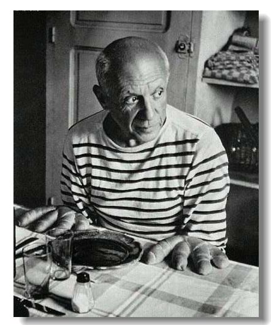
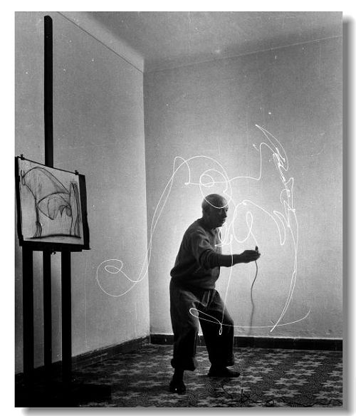
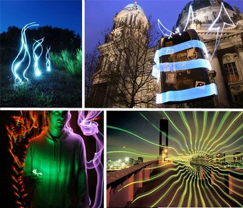

毕加索 @ Dec 01, 2008
毕加索的面包手

模仿，永不能超越！
陶艺“手”。
光绘是毕加索的情人南斯拉夫女画家、摄影师dora给他拍的。


“光绘”是相片长时间曝光“拖影”造成的，光绘，就是去制造“拖影”的效果。

毕加索的作品，无论质还是量，都是惊人的，约达六万件之数。这位天才横溢的艺术家在极其漫长的创作活动的每一刻，似乎想做的都让他准确无误地作到了。为何有此能耐？他自己都不能解答。结果是十八般武艺，他样样皆能。他很多作品跟性欲有关，然而他年龄又很大，他一生好像有6个情人，生命不息，性欲不止，所以人们都很惊叹。这位大师还是共产党员哦。
毕加索自语：无论我在失意或是高兴的当儿，我总按照自己的爱好来安排一切。一位画家爱好金发女郎，由于他们和一盘水果不相协调，硬不把她们画进他的图画，那该多别扭啊！我只把我所爱的东西画进我的图画。
以往，绘画是按累进的方式逐步来完成的，每天产生一些新的东西。因之，一幅画是一个加法的总和。至于我，一幅作品如同个减法的得数。我完成一幅画，接着就把它毁坏掉。但是归根到底，什么也没有损失，犹如我抹掉的一部分红色，它将在另一个部位重新出现。
1923年的《裸女》是毕加索最美的作品。

16 Responses to “毕加索”
2008-12-01
Picasso真的是才华横溢又多产，他曾经说过：give me a museum and I will fill it. 非常自信。
至于性欲嘛。。。hehe 他说过的 it takes a long time to become young….很有道理，可能就是他永葆青春的秘诀吧？
2008-12-02
曝光中的人要保持相对静止才会清楚。要不也会糊了。相机不动，光是毕的手动。但是为什么他的手是清楚的？
2008-12-03
Michael Says:
2008-12-02
曝光中的人要保持相对静止才会清楚。要不也会糊了。相机不动，光是毕的手动。但是为什么他的手是清楚的？
——————————————————————————————————
答案：后帘同步
2008-12-03
一语点醒梦中人
2008-12-04
这个有机会我试试
2008-12-05
什么是后帘同步？
2008-12-06
来自单反相机。它的快门有两块帘幕，开启快门的叫前帘，关闭快门的叫后帘。
快门开启时，前帘打开光线进入，后帘负责关闭快门曝光停止。普通闪光也称前帘同步闪光，即前帘完全开启后立刻发出闪光
后帘同步则是在后帘即将动作关闭快门之前发出闪光
2008-12-06
据说，每一位被毕加索抛弃的女人，都是惨淡经营余生。她们都是他的性奴。
2008-12-06
毕加索一生中只被这个给他拍照的dora抛弃过！
2008-12-07
后帘同步估计不是单反就有吧，我的400D应该没有：（
2008-12-08
这样我的机器也不能后帘同步了…
但是如何能让毕加索手拿笔动,相机记录下笔的轨迹却忽略手的轨迹呢…???
2008-12-08
帘同步估计不是单反就有吧，我的400D应该没有：（
—————————————————————————————-
赫赫，只要买个好外闪就行。
但是如何能让毕加索手拿笔动,相机记录下笔的轨迹却忽略手的轨迹呢…???
————————————————-
赫赫，稍微控制一下曝光，让笔触的光点正常曝光成像，手臂曝光不足，形成光的轨迹。然后再后帘同步让身体和手臂正常曝光成像。这也是为什么这些照片都是在比较暗的环境下拍摄的。
建议你多玩玩相机的M模式。能体会到很多意想不到的效果的。当然，前提是要学习一点摄影知识。
2008-12-08
S和A常用,M就很少用了
2008-12-08
S和A常用,M就很少用了
————————————————————————————-
日常使用S、A、P就够了。不过为了发挥出单反的强大功能，我建议还是多使用M，手动曝光是一件很奇妙的事情~~还有ISO，最好不要自动。
祝各位拍得开心
2008-12-09
我平时ISO还是手调的.WB也是.
谢谢
2008-12-10
叫兽的指导和照片都存下了，琢磨一下。
M档一直用，但是这样的想象组合要学习
Leave A Reply
存档只读，评论已关闭。